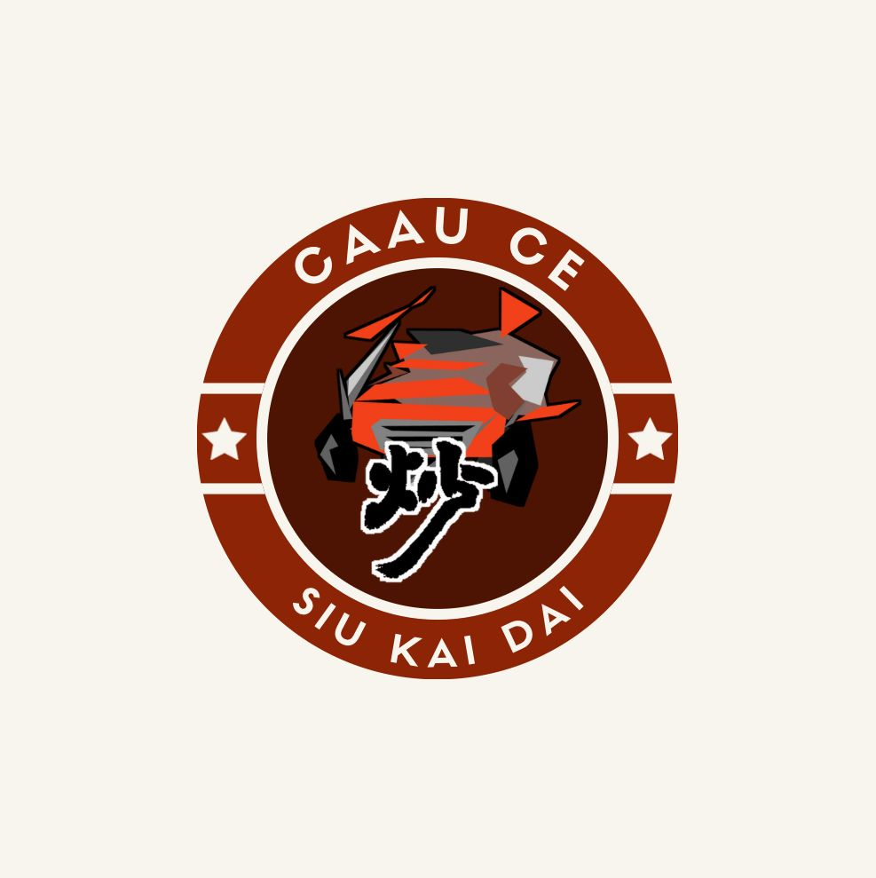
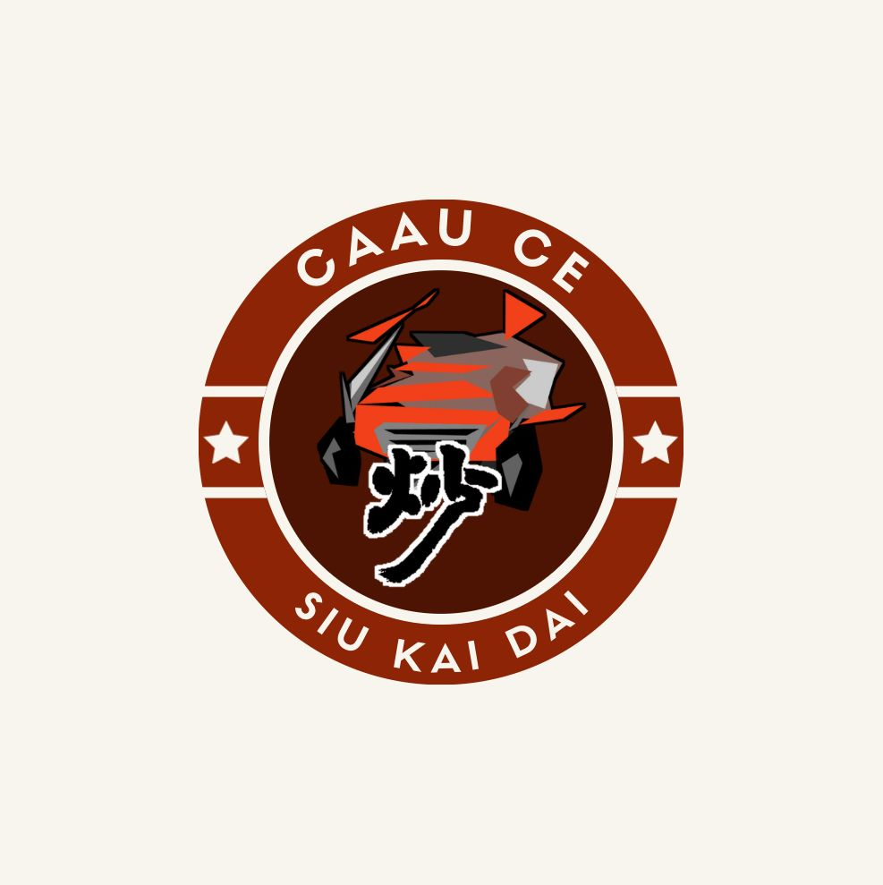

|  | 炒車小契弟Caau Ce Siu Kai Dai |
 |
|  | 炒車小契弟Caau Ce Siu Kai Dai |
|


炒車小契弟（C.C.S.K.D.）已成立滿一週年，乃專業播報組織。內容圍繞各炒手於炒車賽事之表現、賽後檢討與賽事結果，亦不定期會有來自不同炒手互相爆料的文章，為本報內容增添幾分激情。同時，本組織秉持着以真實為上的精神、炒到飛起的行動力及激動的心態為各炒友帶來最高質素的報料文。
「炒」乃一種活動，即是當一人表現差勁到極致而轉變成為優良時的行為。「炒」亦可作為一種劇烈運動，原因是它對炒友的心理質素甚至是體能上都有極高要求。